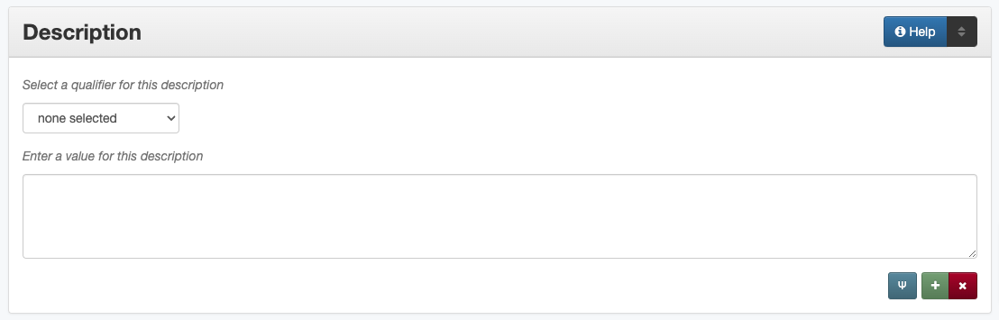

Description
Description Definition
Description of the content attributes of the resource (content description) or physical attributes of the resource (physical description).
How Content Description Works in the Metadata Form
- Parts:
Description type – drop-down menu
Description – text field
- Repeatable?
Yes - clicking ‘Add’ repeats all field parts; there should only be two description fields (one for content and one for physical description)
- Required?
Yes - a content description is required; a physical description is highly recommended. Also see more information about required fields
Note: Given the significant differences for entering description information, guidance sections are repeated separately for content descriptions and physical descriptions below.
Element Name: Content Description
Where Can the Content Description Information be Found?
In some cases a content description may come from accompanying or supplementary information; however, generally, the item must be read/examined to describe the content, such as:
Item Type |
Information Sources |
|---|---|
For text |
|
For images |
|
For maps |
|
For music scores |
|
For videos |
|
For sound files |
|
For computer files |
|
How Should the Content Description be Filled in?
Describe the subject matter of the item
Use complete sentences with proper grammar and punctuation
Avoid any commentary on or interpretation of the item being described (e.g., unless quoting directly, a description should never include “I” or “we” statements)
Guidelines |
Examples |
|---|---|
The description should start with a statement of the item type |
Photograph of … Yearbook for Central University … |
Be descriptive, include details that would be helpful to users, and focus on what the item is about, rather than context: |
|
For photographs, artwork, and other images |
|
Provide a description of any important elements that are visible in the image (e.g., people, buildings, foreground/background, etc.) |
Photograph of a cowboy riding a brown bull in an arena. A rodeo clown is standing on the right side of the image, and behind him, spectators are watching from the other side of a red fence. |
For general text |
|
Give a brief overview of the topic and what information is included |
Biography of Alexander Gregg, including background information about his family sa well as a sketch of his life and involvement in the church throughout his career until his death in 1893. |
For letters |
|
Be sure to state who the letter is to and from, giving a brief overview of the content |
Letter from James E. Sutherlin to his family describing his plans for saving money to buy a new car once he gets home. |
For postcards |
|
Describe them as photographs/images if there is nothing written on the back on the back |
Postcard depicting tents of the New Hampshire camp at Ft. McIntosh in Laredo, Texas. |
If the postcard has a message on the back, describe the image and the correspondence |
Postcard of the Custom House building in Nuevo Laredo, Mexico. A handwritten thank-you note on the back is addressed to Capt. Elmer C. Croom from L. R. de la Peña. |
For serials (newsletters, journals, annual reports, yearbooks, etc.) |
|
A generic description of the kind of content can be used in every record, but may include themes for specific volumes, references to indexes, special issue topics, etc. |
Quarterly publication containing genealogical information about families in East Texas including fifth generation charts, family histories, and lists of records (births, deaths, etc.) |
Journal […]. This issue focuses on “Dallas Goes to War: Life on the Homefront.” |
|
For maps |
|
State the region depicted as well as: important features noted on the map, shading or color that has significance, insets, relief or elevations, and other relevant details |
Map of the western hemisphere including North and South America with the surrounding areas. Bodies of water and geographic features are marked pictorially. There are illustrations of ships in various places around the map. |
When applicable, the scale of the map can be included at the end of the of the description (as a proportion of inches). If the scale is known but not stated on the map, it can be included in [brackets]; approximate scale can be included as “Scale ca. 1:#” |
Map of […]. Scale 1:24,000. |
Map showing parts of North America including most of New Britain (Canada), the United States, and the northern portion of Mexico. U.S. states and territories are shaded in various colors and labeled. Some major cities, bodies of water, and geographic features are marked (with relief shown by hachures). Scale [ca. 1:19,008,000]. |
|
Other suggestions:
Guidelines |
Examples |
|---|---|
Cite any statements taken directly from the item(s) to use in the description |
“Official publication of the Parks and Wildlife Department, dedicated to protecting and conserving natural resources; to providing and maintaining an excellent park system; and to improving hunting and fishing in Texas” (p. 2). |
If the text has an index, include a statement at the end of the description |
Index starts on page 254.
Index starts after page 18.
|
When referring to a company, organization, school, military installation, etc., the abbreviated version of the name can be used, but the full name must appear at least once in the record (preferably the content description or as a keyword |
Photograph of the central stairs inside the North Texas State University A. M. Willis, Jr. Library. The photograph was taken on the first floor looking up at the second. |
Description: Postcard of buildings at Ft. McIntosh […] Keyword: Fort McIntosh |
|
Regarding contextual information (e.g., about a person or place in an image):
|
Description: Portrait of Elwin L, Skiles, who was president of Hardin-Simmons University from 1966 to 1977. He is visible from from the shoulders up and is wearing a dark-colored suit with a tie that has diagonal stripes. |
Display Note: Additional biographical description from accompanying information: Ida Loving Turner was a chosen delegate from Texas to represent the Board of Lady Managers at the 1893 World’s Columbian Exposition in Chicago. She served as Postmistress in Fort Worth; one of the founders of of Fort Worth Children’s Hospital (now [2018] Cook County Children’s Hospital); and thoroughly involved in many other civic endeavors in Fort Worth. The Alma Turner Building in Fort Worth is named after Ida’s daughter, Alma. |
|
Display Note: Additional context: Coca Cola was one of 19 industrial and private exhibitors that participated in HemisFair, held in San Antonio, Texas, from April to October 1968. |
|
|
Display Note: The chautauqua movement was a “popular U.S. movement in adult education that flourished during the late 19th and early 20th centuries…At first entirely religious in nature, the program was gradually broadened to include general education, recreation, and popular entertainment” - from Encyclopedia Britannica |
Other Content Description Examples
- Directory of the City of Fort Worth 1905-06.
Content Description: Directory to the city of Fort Worth, Texas includes lists of important institutions and locations as well as address listings for businesses and individuals. Index to Advertisements is on page 5; Table of Contents is on page 8.
- The Texas Spring Palace
Content Description: This pamphlet includes a guide to the Texas Spring Palace including particular sites and places in Texas. Additionally, the Texas and Southwestern Railway Guide starts on page 59 with printed timetables for the train schedules.
- Digital photograph: [Bull Riding at Cowtown Coliseum]
Content Description: Photograph of a cowboy, wearing a helmet, riding a brown and white bull in an arena. A cowboy in red stands on the floor, off to the left. People watch from the other side of a red fence.
- Quilt pieces
Content Description: 39 cotton quilt squares for making pieced quilt; 4 small blocks make up each large one, each small block being composed of 2 triangles and one central arrow-shaped piece.
- The Bronco, Yearbook of Hardin-Simmons University, 2007
Content Description: Yearbook for Hardin-Simmons University in Abilene, Texas includes photos of and information about the university, student body, professors, and organizations. Name index starts on page 156.
- Legacies: A History Journal for Dallas and North Central Texas, Volume 1, Number 1, Spring, 1989
Content Description: Biannual publication “devoted to the rich history of Dallas and North Central Texas” as a way to “examine the many historical legacies–social, ethnic, cultural, political–which have shaped the modern city of Dallas and the region around it” (p. 3). This issue focuses on “Dallas Then, Dallas Now.”
- Photograph: Cattle
Content Description: Photograph of cattle on a farm next to a feeder.
- [Map showing the geographical location of Fort Worth, Tex. and Rail Roads]
Content Description: Map accompanying the book, The capitalist, or, The city of Fort Worth: a parody on the Mikado. The map shows railroad lines all over the U.S.
- Recueil d’opera
Content Description: Collection of opera excerpts in manuscript (in an unidentified hand).
- Moving image: Forget Not These Children
Content Description: This film discusses children with mental disabilities and the people and institutions that help them become functioning members of their communities. Schools include: New Lisbon State Colony; Woodbind State Colony; Vinalyn State School; Totowa North Jersey Training School.
- World War II poster: making America strong: competitive companies co-operate to produce important instruments for military aircraft.
Content Description: Black and white poster features comic-book style drawings of an industrial worker, managers, and buildings, and a large outline map of the U.S. containing additional text.
- Color slide: [Sydney Harbour and Opera House]
Content Description: Photograph of the Sydney Opera House. In the foreground, the harbor and several ships are visible; the buildings of Sydney, Australia are visible in the background behind the opera house.
Element Name: Physical Description
Where Can the Physical Description Information be Found?
Physical description comes from physically examining the item including:
physical dimensions
pagination
printing methods or process (tintype, daguerrotype, woodcut, etc.)
How Should the Physical Description be Filled in?
Enter physical descriptions including: dimensions, extent, pagination, and related physical and process details
When dimensions are given, specify the units, e.g., “cm.” for centimeters or “in.” for inches
When possible, follow AACR2 rules including exact punctuation (extent : physical details ; dimensions + accompanying materials)
“Extent” should always be included but “Physical details” may be shortened or left out if not apparent and “Dimensions” can be omitted if not available
Physical description rules are explained by item type:
Books, pamphlets, and printed sheets
Guidelines |
Examples |
|---|---|
extent = number of pages of content |
|
|
30 p. iv, 320 p. A-M p. [41] p. 182-536 p. 1 pamphlet (12 p.) |
physical details = illustrations within the text, including photographs |
|
|
: col. ill. : ill. (some col.) : maps, ports. : ill., col. maps : all ill. : chiefly ports. : ill. |
dimensions = height, or height x width in cm. |
|
|
; 23 cm. ; 28 x 10 cm. ; 22 x 28 cm., folded to 22 x 10 cm. |
Examples:
[41] p. : ill. ; 18 cm.
680 p. ; 28 cm.
xi, 83 p. : col. ill., maps ; 36 cm.
1 pamphlet : ill. ; 22 x 28 cm., folded to 22 x 14 cm.
[3] p.
6, [32] p. : ill. ; 28 cm.
5 sheets, 3 p. : ill. ; 23 cm.
(If the text is not illustrated and the dimensions are unknown, only the number of pages will be in the description.)
Also see Other Examples.
Photographs and other “graphic” materials
Guidelines |
Examples |
|---|---|
extent = number and kind(s) of items |
|
Note: for slides, we treat the digital image as a “photograph” since the physical slide is not scanned |
1 photograph 2 art prints 1 postcard |
physical details = medium & color usage |
|
|
: sepia : positive, b&w : col. : blue and white : negative, col. : blueline : engraving, tinted |
dimensions = height x width |
|
Exceptions:
Note: For photos/images on individual scrapbook pages, use # scrapbook page(s) ; h x w of whole page in cm. |
; 10 x 14 cm. ; 35 mm. ; 10 x 8 in. ; 1648 x 2464 px. ; 13 x 21 cm., on mat 22 x 27 cm. ; 17 x 22 cm., in frame 21 x 26 cm. |
Examples:
1 postcard : b&w ; 8 x 13 cm.
1 photograph : positive, col. ; 35 mm.
1 art print : lithograph, b&w ; 21 x 26 cm.
1 photograph : b&w ; 13 x 21 cm., on mat 22 x 27 cm.
1 photograph : hand col. ; 25 x 20 cm.
1 photograph : col.
1 photograph : b&w ; 8 x 6 cm., in folder 10 x 14 cm., folded to 10 x 7 cm.
(In some cases, particularly with born-digital photographs, the dimensions may not be known.)
Also see Other Examples.
Maps and other cartographic materials
Guidelines |
Examples |
|---|---|
extent = number and kind(s) of items |
|
|
1 globe 5 maps on 1 sheet 1 atlas (57 p.) |
physical details = layout, production, color, etc. |
|
Add relevant details in the following order, separated by commas:
|
: both sides : blueprint 1 atlas (23 p.) : 14 maps : hand col. 1 atlas (25 p.) : 20 col. maps, ink : col., wood 1 globe : col., wood, on brass stand |
dimensions = height x width in centimeters |
|
|
; 22 x 41 cm. ; 16 x 22 cm., on sheet 28 x 22 cm. ; 45 cm. |
Examples:
1 map : hand col. ; 44 x 60 cm.
3 maps on 1 sheet ; 47 x 77 cm.
1 atlas (30 p.) : some col. ; 52 cm.
Also see Other Examples.
Manuscripts (maps, musical scores, and other documents that are handwritten)
Formatting is essentially the same as for books and other texts:
Guidelines |
Examples |
|---|---|
extent = number of pages of content |
|
|
vi, 25 p. [24] leaves, bound 19 leaves (2 columns, 32-56 lines) |
physical details = illustrations within the text, materials |
|
|
: col. ill., maps : vellum, ill. : parchment, ill., maps |
dimensions = height, or height x width in cm. |
|
|
; 36 cm. ; 31 x 15 cm. ; 42 x 71 cm., folded to 11 x 16 cm. |
Examples:
60 p. ; 26 cm.
[3] p. : parchment ; 29 cm., folded to 12 x 22 cm.
Also see Other Examples.
Music
Guidelines |
Examples |
|---|---|
extent = number of scores or parts |
|
|
1 score 1 cello part (5 p.) |
physical details = illustrations within the text, materials |
|
|
: parchment, col. ill. |
dimensions = height, or height x width in cm. |
|
|
; 36 cm. |
Examples:
1 score ; 31 cm.
1 vocal part (3 p.) ; 28 cm.
1 score : ill. ; 41 cm.
Also see Other Examples.
Sound recordings
Guidelines |
Examples |
|---|---|
extent = number and kind(s) of items, duration |
|
|
1 sound disc (20 min.) 2 sound reels (1 hr., 4 min.) 1 recording (1 hr., 25 sec.) |
physical details = medium & physical characteristics |
|
|
: digital : analog, 33 1/3 rpm |
dimensions = physical size |
|
|
; 12 in. ; 4 3/4 in. ; 16 mm. |
Examples:
1 sound disc (56 min.) : digital ; 4 3/4 in.
1 recording (1 hr., 3 min., 50 sec.) : digital
Also see Other Examples.
Motion pictures and videorecordings
Guidelines |
Examples |
|---|---|
extent = number and kind(s) of items, duration |
|
|
1 videodisc (1 hr., 45 min.) 1 cassette (VHS) (1 hr., 20 min., 10 sec.) 1 film (2 hr., 58 sec.) 1 video recording (57 min., 24 sec.) |
physical details = color & sound |
|
|
: sd., col. : si., b&w : sd., b&w, 25 fps |
dimensions = physical size |
|
|
; standard 8 mm. ; 1/2 in. ; 8 in. ; digital |
Examples:
1 film (28 min.) : sd., b&w ; 16 mm.
1 recording (30 min., 9 sec.) : sd., col. ; digital
Also see Other Examples.
Three-dimensional objects
Guidelines |
Examples |
|---|---|
extent = number and kind(s) of items |
|
|
1 jug 2 shoes 1 game (1 board, 80 cards, 2 dice) 14 beads |
physical details = materials & colors |
|
|
: clay : balsa wood and paper : glass, col. : porcelain, green and white |
dimensions = physical size |
|
|
; 20 cm. long ; 18 cm. in diam. ; 26 x 30 x 6 cm. ; 16 x 32 x 3 cm., in case 17 x 34 x 6 cm. |
Examples:
1 magnifying glass : gold, glass, and mother-of-pearl ; 6 x 11 cm.
1 plate : blue and white ; 25 cm.
1 figurine : wood
1 pair glasses : glass and metal ; 12 x 3 cm.
2 candlesticks : brass
1 set of blocks ; in case (3 x 15 x 28 cm.)
1 petticoat : silk
ca. 64 marbles : ceramic
Also see Other Examples.
Accompanying material
Accompanying material only refers to multiple pieces included within the same digital object
Any time that an item has an additional piece (e.g., a book with an audio CD, a score with separate parts, a globe with a teacher’s guide, etc.) the information for the supplementary item can be included at the end of the description for the main item
Describe the main item, add each supplementary item with a “+”
For supplemental information, use the rules for the type of item that it is and state the extent followed by physical details and/or dimensions in parentheses
Examples:
1 score (35 p.) ; 33 cm. + 4 parts (12 p. ; 30 cm.)
1 globe : col., wood, on metal stand ; 37 cm. in diam. + 1 teacher’s guide (14 p. : ill. ; 20 cm.)
1 score (47 p.) : ill. ; 32 cm. + 2 parts (30 p. each ; 32 cm.)
[1] p. ; 28 cm. + 1 envelope (10 x 17 cm.)
Other Physical Description Examples
- Directory of the City of Fort Worth 1905-06.
Physical Description: 550, vi, 5-38 p. : ill. ; 24 cm.
- The Texas Spring Palace
Physical Description: [128] p. : ill. ; 23 cm.
- Digital photograph: [Bull Riding at Cowtown Coliseum]
Physical Description: 1 photograph : digital, col. ; 1648 x 2464 px.
- Quilt pieces
Physical Description: 1 quilt block : cotton ; 21 x 23 cm.
- The Bronco, Yearbook of Hardin-Simmons University, 2007
Physical Description: 160 p. : ill. ; 29 cm.
- Legacies: A History Journal for Dallas and North Central Texas, Volume 1, Number 1, Spring, 1989
Physical Description: 40 p. ; 26 cm.
- Print photograph: Cattle
Physical Description: 1 photograph : b&w ; 11 x 7 cm.
- [Map showing the geographical location of Fort Worth, Tex. and Rail Roads]
Physical Description: 1 map : col. ; 26 x 36 cm.
- Recueil d’opera
Physical Description: 1 ms. vocal score ([318] p.) : ill. ; 38 cm.
- Forget Not These Children
Physical Description: 1 film (18 min.) : col. ; 16 mm.
- World War II poster: making America strong: competitive companies co-operate to produce important instruments for military aircraft.
Physical Description: 1 poster : b&w ; 28 x 36 cm.
- Color slide: [Sydney Harbour and Opera House]
Physical Description: 1 photograph : positive, col. ; 35 mm.
- Scrapbook pages (depending on content)
Physical Description: 1 scrapbook page ; 33 x 26 cm.
Physical Description: 4 photographs : b&w ; 14 x 8 cm., or smaller, on page 35 x 24 cm.
Physical Description: 1 clipping : ill. ; 19 x 10 cm., on sheet 28 x 22 cm.
- Newsletter with continuous pagination
Physical Description: 137-181, iii p. ; 28 cm.
- [Funeral Program for Wilbert Charles Sheffield, February 11, 2014]
Physical Description: 1 pamphlet (12 p.) : col. ill. ; 28 cm. + 1 card (col. ill. ; 22 x 14 cm.)
- Digital video
Physical Description: 1 recording (4 min., 16 sec.) : sd., col. ; digital (Apple iPhone 6 Plus)
- Brochure: Coleto Creek Park and Reservoir
Physical Description: 1 pamphlet : col. ill. ; 23 x 41 cm., folded to 23 x 10 cm.
Resources
More Guidelines:
Comments
For format (text, image, etc.), use the Format element.
Since the physical description element corresponds to the [300] field in the MARC records used by many library catalogs, it is recommended to follow AACR2 rules, when possible/applicable.
For our purposes, standard photograph sizes refer to the following:
Prints
Negatives
4 x 6 in.
5 x 7 in.
8 x 10 in.
11 x 14 in.
16 x 20 in.
20 x 24 in.
24 x 36 in.
35 mm.
1.375 x 1.265 (“sixteenth plate”)
6 x 4.5 cm.
2 x 2.5 in. (“ninth plate”)
6 x 6 cm.
6 x 7 cm.
2.75 x 3.25 in. (“sixth plate”)
6 x 9 cm.
3.25 x 4.25 in. (“quarter plate”)
4 x 5 in.
4.25 x 6.5 in. (“half plate”)
5 x 7 in.
6.5 x 8.5 in. (“whole plate” or “full plate”)
8 x 10 in.
(Back to photograph physical description rules.)